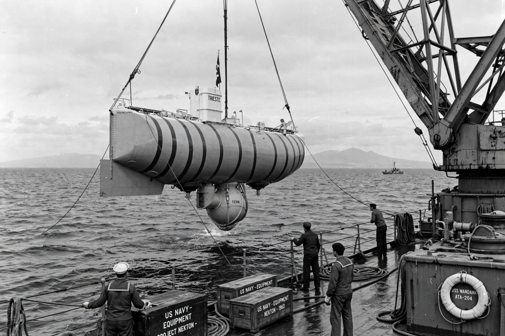

Challenger Deep

The Challenger Deep, in the southern end of the Mariana Trench east of the Mariana Islands, is the deepest known point in Earth's oceans, at roughly 10,900 metres below sea level — deep enough that Mount Everest, set on the trench floor, would still be submerged by more than a kilometre of water.
It is named after the British survey ship HMS Challenger II, whose 1951 echo soundings first identified the exceptional depth.
Exploration
The bathyscaphe Trieste carried Jacques Piccard and Don Walsh to the bottom in January 1960, the first crewed descent. No one returned until film-maker James Cameron's solo dive in the Deepsea Challenger in 2012; since 2019 the submersible Limiting Factor has made repeated crewed descents, and uncrewed vehicles from several countries have also visited.
Despite pressure exceeding a thousand atmospheres, the trench floor hosts life: amphipods, sea cucumbers and microbial communities, alongside unwelcome traces of human pollution detected in trench animals.
Geology
The trench marks the subduction zone where the Pacific Plate dives beneath the Philippine Sea Plate (see Subduction). The Challenger Deep lies in a small basin at the trench's south-western end. Precise depth measurements vary slightly by method and survey, generally in the range of about 10,900–11,000 metres.
See also: Mariana Trench · Deep sea · Subduction · Plate tectonics · Ocean